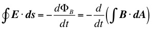

Formally, time independent electrical and magnetic properties can be described by considering electricity and magnetism as largely separate phenomena. However, when time dependence becomes part of the "equation" we find that electrical and magnetic properties become inextricably linked - electromagnetism.
where S is the surface over which the flux is evaluated.
For constant B, perpendicular to the surface, ΦB = BA where A is the surface area of S.
The induced electromotive force (emf) in a circuit is equal to the rate of change of magnetic flux through the circuit.
(a) Magnetic flux passes through the circuit, but does not change with time, so there is no induced emf and so no induced current.
(b) The flux through the circuit increases with time causing an induced emf and current.
(c) As the magnet moves faster the rate of change of flux with time is increased causing a larger emf and current.
(d) When the magnet moves away from the circuit the flux decreases with time so the induced emf and current are reversed.
In the diagram at right the current in the left circuit is constant, but the flux through the other circuit increases as the two circuits get closer.
In the situation at left both circuits are stationary. The current in the left circuit is initially zero, but rapidly increases to a constant value when the switch is closed. As the current reaches its final (constant) value the flux through the right circuit is increasing with time, thus by Faraday's Law, causing a brief pulse of induced current in the second circuit. When the switch is opened the flux in the right circuit rapidly decreases causing a short induced current pulse in the opposite direction.

LENZ'S LAW
"The induced current will appear in such a direction that it opposes the change that produced it"
Confusing ? Yes !
where dε is the potential difference in ds.
Therefore,
So that the emf around the whole loop is
Equating this emf to that given by Faraday's Law we obtain the integral form of Faraday's Law, the third of Maxwell's equations we have encountered so far,

"A
magnetic field
changing with
time induces
an electric
field"
Shortly we will see that the reverse of this statement is also true.
They told me I had type A blood, but it was a Type O.
Dr. C. L. Davis
Physics Department
University of Louisville
email: c.l.davis@louisville.edu